CKA_Note_Section_9_Networking
Contents
前言
既然這個章節是介紹 Kubernetes Networking 那就先來複習一下之前看過的優質文章吧!
188. Prerequisite - Network Namespaces
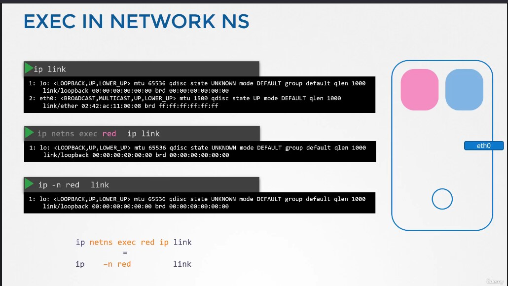
▲ 使用 ip netns exec <NAMESPACE> ip link 能以 <NAMESPACE> 的視角查看，或者更快的 ip -n <NAMESPACE> link。
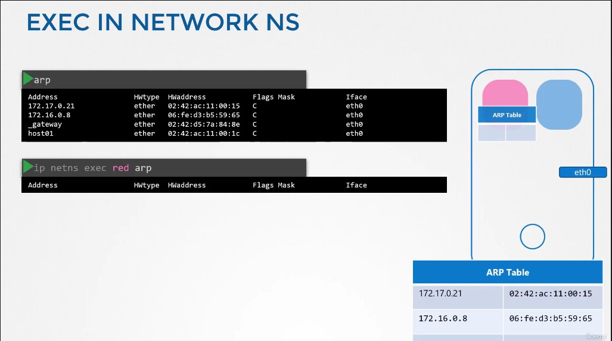
▲ 使用 ip netns exec <NAMESPACE> arp 顯示 namespace 內的 arp table。
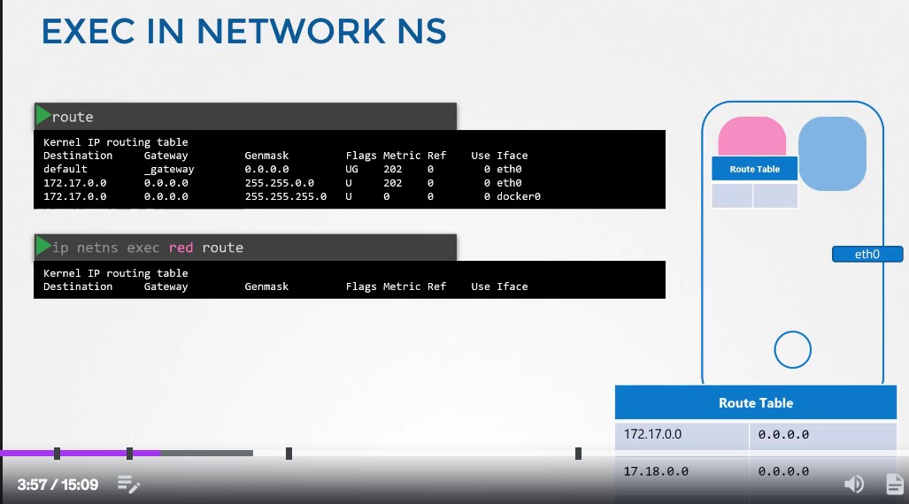
▲ 使用 ip netns exec <NAMESPACE> route 顯示 namespace 內的 routing table。
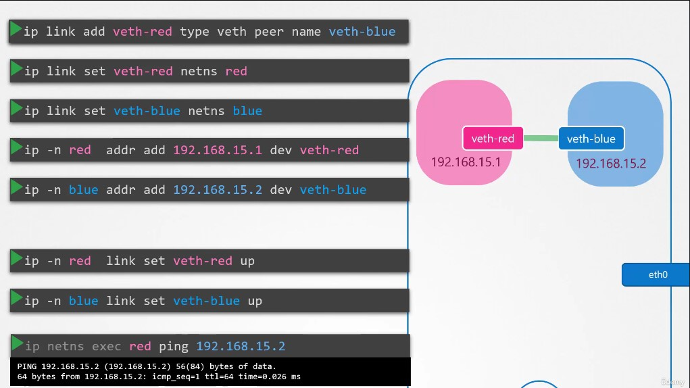
▲ (上面 ip addr add 漏掉 netmask 了) 這邊講師跟邱牛這篇 Docker 網路入門篇(二) - Bridge 網路模型 做的事情差不多，都是打造 veth pair，只不過邱牛是在 runtime == docker 下解釋，講師則是將 red, blue 這兩個 namespace 從 host OS 透過 ip link add 的方式加在原始路徑裡面。
P.S. 若要刪除 veth pair 的話只需要下達一次 ip -n <NAMESPACE> link del <veth_name> 即可。
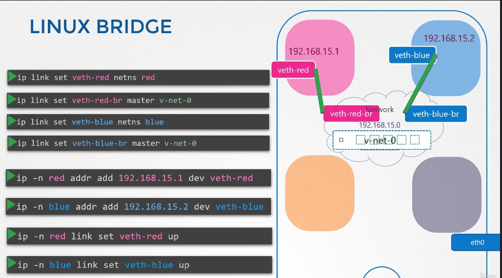
▲ 透過 ip link add v-net-0 type bridge && ip link set dev v-net-o up 產生的 bridge 可以把他想像成放在 host 的 virtual switch。
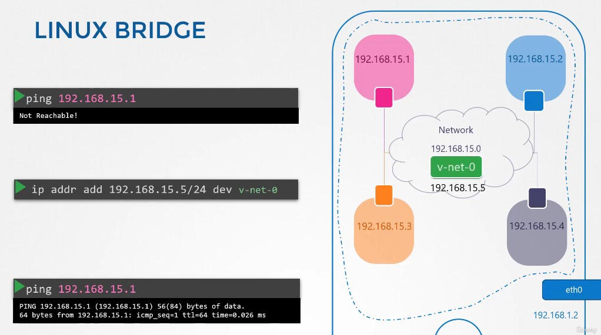
▲ 如果想從 host ping 到這四個 namespace 的話只需要將 linux bridge binding IP 即可 (讓 host 有 route table)。
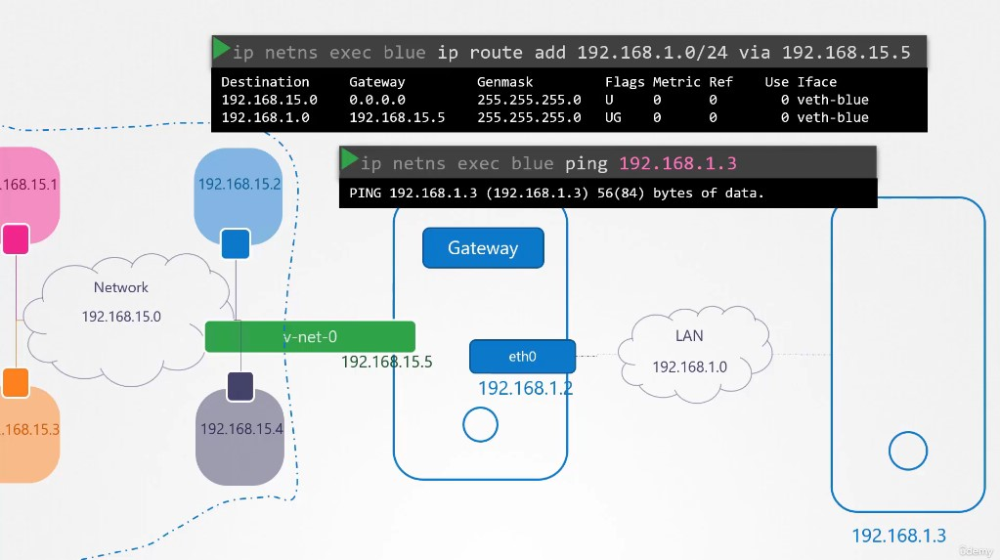
▲ 我們想從 blue 碰到 192.168.1.3 就必須在 blue namespace 裡面加給他 static route (建議直接用 default gateway) 不過還是沒辦法收到 ping reply (先暴雷，因為要請 host eth0 幫我們做 SNAT 「看到來自 192.168.15.0/24 的封包請幫我用 192.168.1.2 host eth0 的身分送出!」)
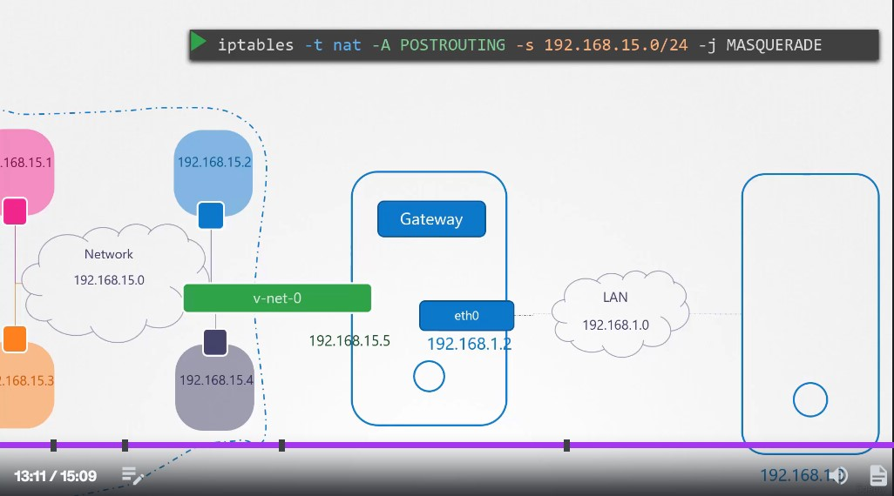
▲ 如果謹慎一點應該要 iptables -t nat -I POSTROUTING -s 192.168.15.0/24 -i v-net-0 -o eth0 -j MASQUARADE 來限制 --in-interface 與 --out-interface。
191. Prerequisite - CNI
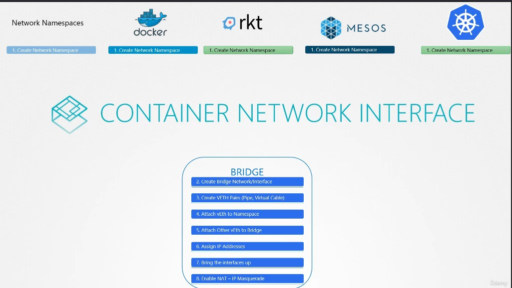
▲ 既然各個 container runtime 都需要在 host 做這些必要事情，CNI 的誕生提供業界標準避免重複造輪。
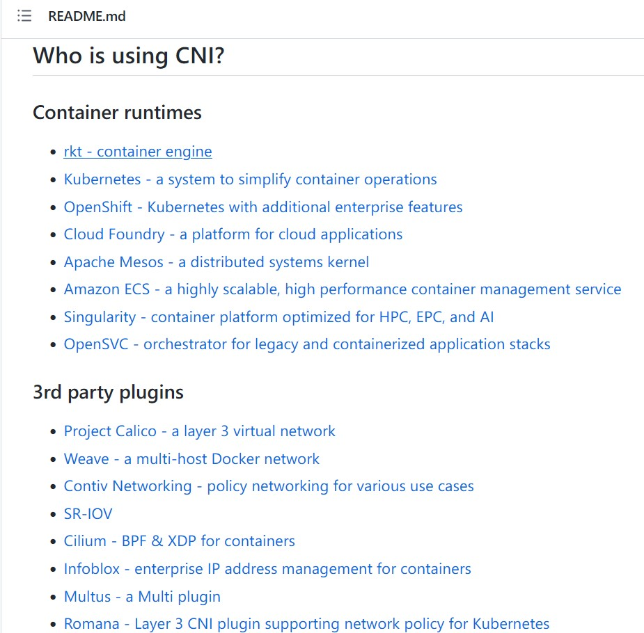
▲ Who is using CNI 可以看到一些官方列出的 container runtime，以及第三方 plugins。
CNI 還有提供 library 可以自行開發屬於你自己的 CNI plugins~
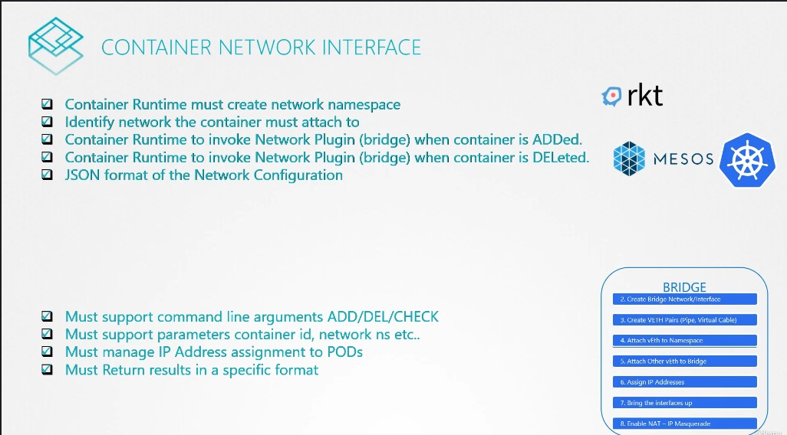
▲ CNI 切了兩個責任區，上方是 container runtime 必須要負責的；下方則是 plugin，達成 any runtime should be able to work with any plugins.
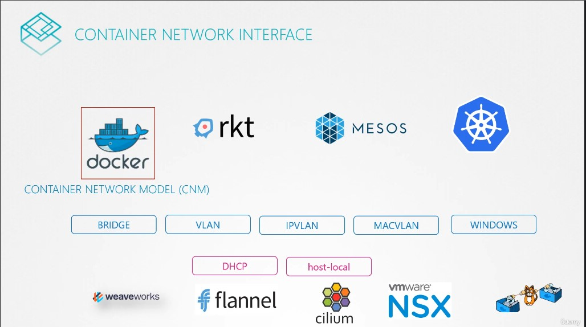
▲ CNI 自帶一些基本的 plugin，下方是第三方 plugin。延伸閱讀: [Hwchiu]常見 CNI (Container Network Interface) Plugin 介紹 而 docker 並不使用 CNI，而是自身的 CNM (container network model)
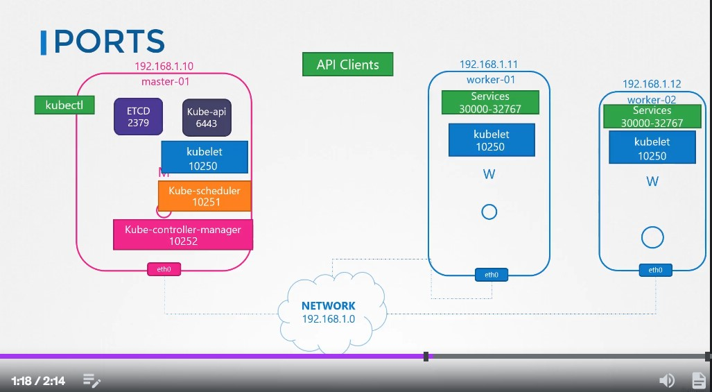
▲ K8s 各個元件需求的 port，如果是 multi-master 架構的話 etcd 需要額外開啟 2380/tcp 來同步。
官方有提供檢查表 Ports and Protocols
193. Important Note about CNI and CKA Exam
- 在 LAB 當中考生將被要求安裝 Network Addons (包含 plugin)
- plugin 將使用 weave-net 作為範例，當然考生可以自由選擇其他 solution
- 實際考試除非題目指定要求，不然也是自由選擇。
- 從上方提供的 自由選擇其他 solution 可以發現所有選項點進去都是其官方網站/GitHub，正式考試時只能看官方文件! 好哩加在，小飛機推薦的 CKA Bookmark 有包含官方文件安裝 Weave-net 的方式。
196. Pod Networking
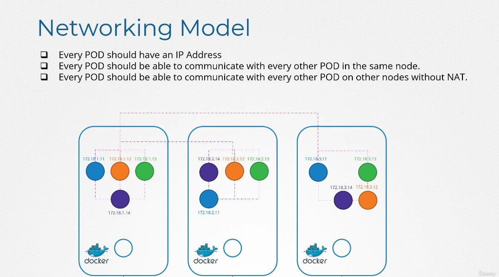
▲ 這個章節主要介紹 pod 在跨 worker node 要怎麼互相碰到。
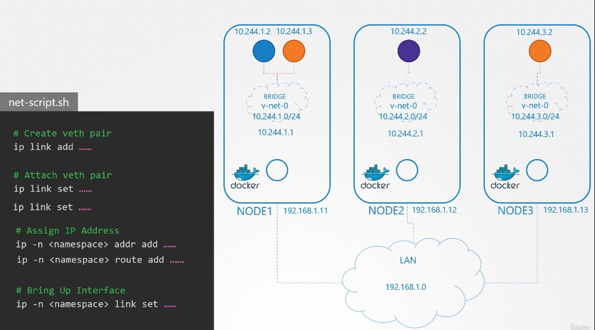
▲ 範例有三個 worker node，首先要先解決同 worker node 內互連的問題: (1) 建立一個 bridge (2) veth pair 接上 bridge <=> container (3) 為 bridge 與 container 設定 IP。
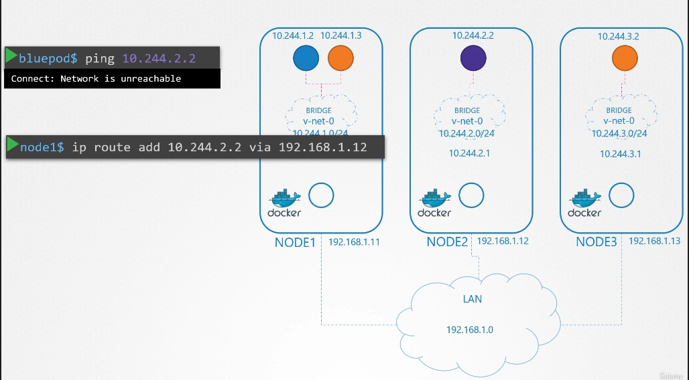
▲ 想從 bluepod 去找位在 node2 的 purple pod 10.244.2.2，卻發現 ping 不到，原因是沒有路由。手動增加一筆靜態路由 (非永久) ip route add 10.244.2.2/32 via 192.168.1.12 請 node1 的 eth0 幫我們送件~
eth0 收到之後會向 L2 domain 發送 broadcast 「誰有 10.244.2.2 呀，請給我他的 MAC address 謝謝」
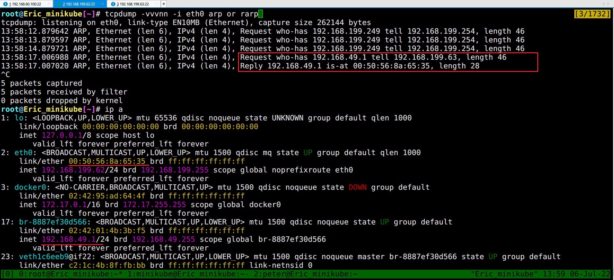
▲ 實際做一次實驗 Eric_minikube 192.168.199.62 eth0 收到 arp broadcast 之後就單獨回覆 (unicast) 192.168.199.63 說 「我有，挖來出力!」
因為該 network 是本身就有的，無論是否開啟 net.ipv4.ip_forward =1 都能送達。
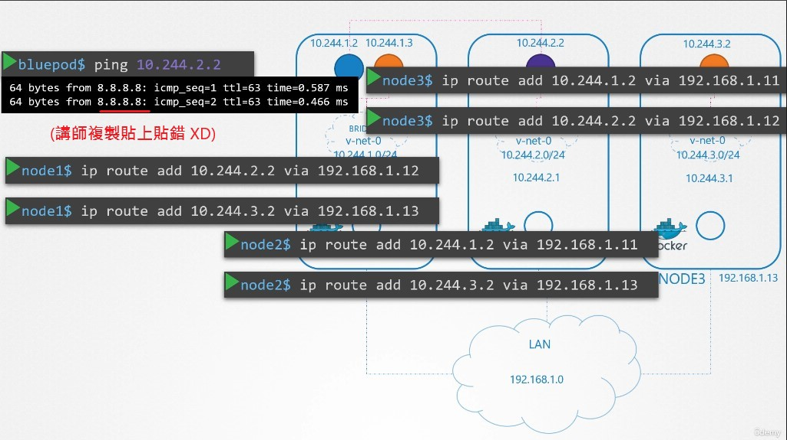
▲ 接著在每一個 worker node 都加上一筆 static route。
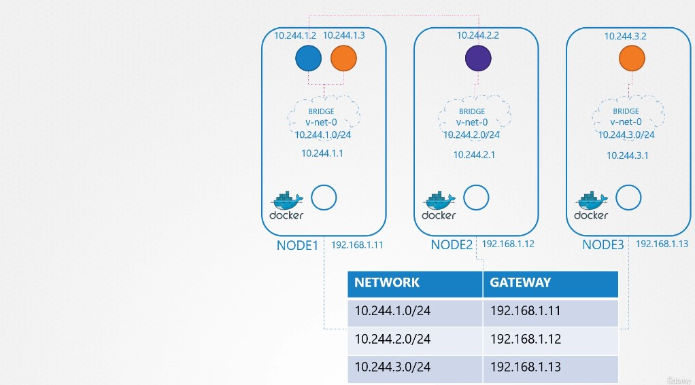
▲ 實際上不會這樣一筆一筆加，太麻煩了。直接給整個網段一個 gateway 就好!
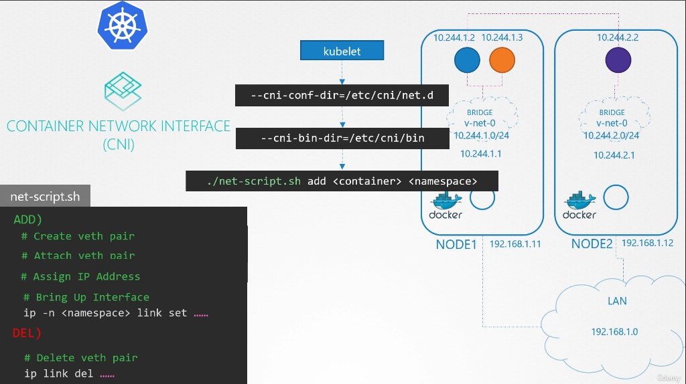
▲ kubelet 會從 --cni-conf-dir 找到設定的 .json 然後 pass 給 --cni-bin-dir 執行，創造屬於該 container 的 network namespace。
197. CNI in kubernetes
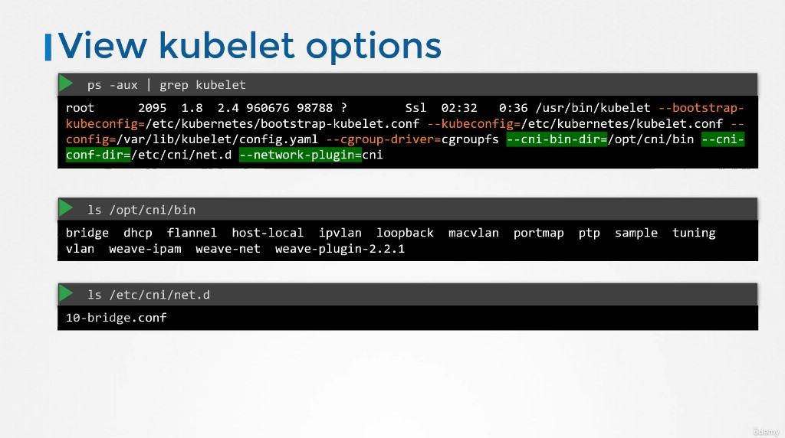
▲ --cni-bin-dir 下面有可供使用的 plugin binary file。
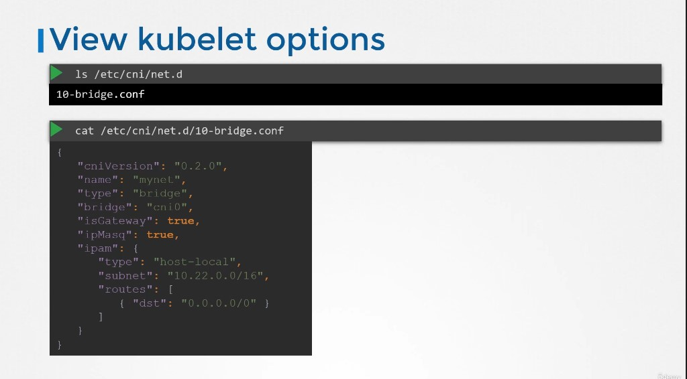
▲ isGateway 代表是否要給 bridge binding 一個 IP address，好讓它變成 gateway 的角色；ipMasq 是否要在 host 針對這個 network 做 NAT。詳細 Container Network Interface (CNI) Specification
Author 老柯
LastMod 2022-07-04